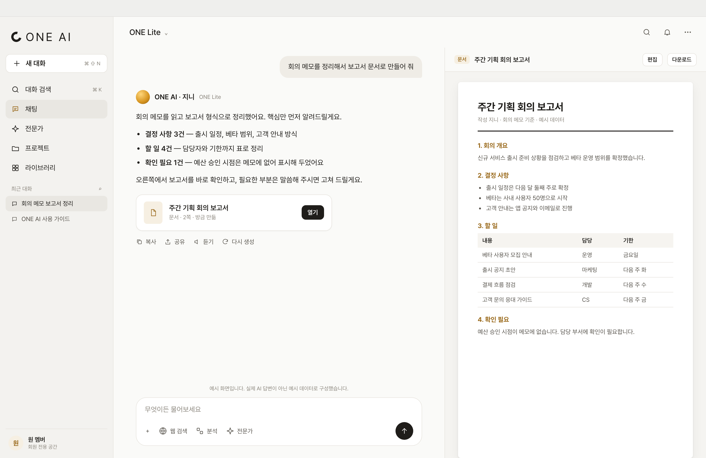

AI 대화와 파일 분석, 전문 도구와 문서 작업을 개인 작업 공간에 연결하는 AI 업무 플랫폼입니다. 질문의 답에서 끝나지 않고 문서·슬라이드·표 같은 작업물로 이어집니다.
이런 분이 씁니다
회원 전용 서비스로, 자료를 정리하고 문서와 이미지 작업을 AI와 함께 하려는 회원
풀어낸 문제
질문의 답을 읽는 데서 끝나지 않고, 자료와 문서 작업으로 이어져야 합니다. 파일과 대화, 작업물이 같은 흐름 안에 있어야 합니다.
아이작브릿지 개발 범위
ONE AI 플랫폼을 개발하고 있습니다.
주요 기능
- 01
스트리밍 대화
답변을 실시간으로 이어서 보여 주고, 중간에 멈추거나 다시 생성할 수 있습니다.
- 02
파일 분석
PDF와 오피스 문서, 표와 사진을 첨부하면 파일 내용을 바탕으로 답합니다.
- 03
출처 있는 검색
웹 검색으로 찾은 내용에는 참고한 출처 링크를 함께 표시합니다.
- 04
전문 도구
작업에 맞는 전문 도구를 골라, 같은 내용을 문서·슬라이드·표 작업물로 만들고 내려받습니다.
- 05
이미지 만들기
대화 안에서 이미지를 만들고, 올린 사진을 편집합니다.
- 06
개인 작업 공간
계정마다 대화, 프로젝트, 라이브러리와 개인 파일을 클라우드에 저장해 다른 기기에서도 이어 씁니다.
화면으로 보기


다음 프로젝트MOA→
비슷한 일을 소프트웨어로 풀고 싶다면, 지금의 상황부터 알려 주세요.
프로젝트 문의하기